Introduction¶
How To Use This Guide¶
This documentation has been written using Read The Docs. It can be navigated through by scrolling, or clicking the sections in the navigation bar. The subsections can be explored by clicking the plus sign next to each section. A PDF copy of this guidance can be exported by clicking on ‘v: latest’ at the bottom of the navigation panel, then you will see the options to download the document in PDF and other formats.
The GeoNetwork framework also has documentation which is linked to within some pages of the SSDI. This is more generic guidance than you will find in the SSDI documents, but may be of use if you can’t find your answer here.
The Scottish SDI Metadata Catalogue (SSDI)¶
The Scottish SDI Metadata Catalogue (SSDI) underpins the coordinated and regulated publishing of Scottish public sector spatial data to the INSPIRE and UK Location specified standards. It provides the discovery component for a set of on-line services that will allow users to evaluate and use public sector spatial data.
If you have any questions regarding the SSDI please contact: SSDI.metadata@gov.scot
This guide sets out detailed guidance on the creation, publishing and maintenance of INSPIRE discovery metadata. It covers both spatial data being published under INSPIRE and all other spatial data published through the SSDI. The SSDI feeds into the UK public data publishing platform data.gov.uk.
Harvest of the metadata in the SSDI to the data.gov.uk site is performed automatically on a daily basis, therefore record amendments should appear on data.gov.uk within 24 hours. Users should contact SSDI.metadata@gov.scot if they believe their records are not being harvested correctly.
SSDI metadata requirements¶
If you publish spatial data on the SSDI then the following operational commitments must be followed:
- You will endeavour to adopt a process of continuous improvement for the resources you publish, based on the feedback you receive.
- You will maintain your discovery metadata:
- assuring its quality against appropriate standards
- reviewing it, updating it regularly, and ensuring it is updated when new versions of data, data series or on-line services are published.
- maintaining metadata File Identifiers (UUID) throughout the life of the metadata resource (new UUIDs should only be created when new resources are published, to prevent duplicate metadata resources).
If you publish on the SSDI then the following service commitments must be followed:
- For all data:
- compliance with the INSPIRE Metadata Regulation and the UK Location operational requirements, as set out in this guide.
- if publishing INSPIRE Network Services, compliance with the INSPIRE Network Services Regulation.
- the publishing of INSPIRE View Services for a given dataset or data series.
- For data that comes under an INSPIRE Theme and contains features
listed in the INSPIRE Data Specifications:
- legal compliance with the INSPIRE Directive
Where to obtain more information on INSPIRE¶
The latest information, and additional resources, can be obtained by visiting the UK Location web site. Guidance that supports the implementation of INSPIRE can be found in the Guidance and Tools section. If you would like to contact the UK Location Coordination Unit, please use the contact form at:
http://data.gov.uk/location/contact_points
Further information on INSPIRE is also circulated on Knowledge Hub, within the Scottish SDI Strategy Group, SDI/Inspire forum. The Scottish Government has also published guidance on the delivery of Inspire conformant web map services. The first instalment of this guidance can be accessed at:
Scottish marine data in the SSDI¶
MEDIN is another format for metadata that relates to marine data and was created for a domain specific purpose. The format of metadata held in the SSDI is sufficient for MEDIN purposes, the additional metadata elements included in MEDIN remain once the metadata has been added to the SSDI). MEDIN metadata can be thought of as a superset of the information held in the SSDI.
The SSDI and data.gov.uk can use MEDIN records (which come as slight but valid and complete supersets of Gemini 2.2 records). It is recommended that for Marine datasets that have metadata in MEDIN format, Scottish organisations should provide the appropriate metadata to both the SSDI and the MEDIN portal.
General Introduction to the SSDI¶
Accessing the SSDI¶
The Scottish SDI Metadata catalogue can be accessed from the following link:
https://www.spatialdata.gov.scot
The main page comprises a menu that allows you to reach the advanced search panel, the map interface, the sign in button and a dropdown for languages. The main body of the page comprises a simple search bar, the option to browse by topics (default) or inspire themes, and below that the latest and most popular datasets. Clicking the SSDI logo on the top menu will return the user to the home page.

Figure 2.1.1: SSDI catalogue main page
Once a user of editor or reviewer profile or above has logged in, they will be presented with further buttons on the top menu for Contribute, Admin Console and Sign out. Contribute has a dropdown option that gives access to Add new record, Import new records and Manage directory.
Unregistered users will not see the option to contribute, or the admin console.
Searching for metadata in the SSDI¶
Quick searches on the SSDI can be performed using the free text box in the centre of the home page and clicking the blue Search icon. This will take the user to the advanced search panel, showing the resulting records in the centre of the page, with additional filtering options to the left. To the bottom right of the page is a small map view of the search results. Clicking the search button on the top menu of the home page will also bring the user to this page.
One of the main functions of the site is to allow users to search for both dataset and service metadata. The results can be limited to either of these using top filtering option on the left-hand panel, ‘Type of Resources‘. Below this are filters for ‘Topics‘, ‘INSPIRE Themes‘, ‘Keywords‘, ‘Contact for the resource‘, ‘Provided by‘, ‘Years‘, ‘Formats‘, ‘Representation Types‘, ‘Update Frequencies‘, ‘Service Types‘, ‘Scale‘, and ‘Resolutions‘. Each search filter shows the number of records returned next to it.
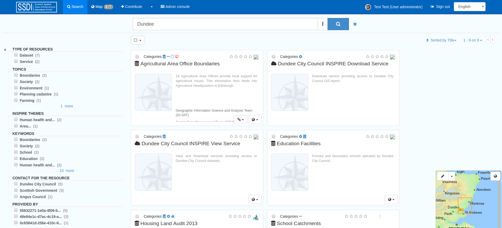
Figure 2.2.1: SSDI catalogue search options
Other search options are available from the three vertical dots icon to the right of the main search text box. This expands to show What and When options. Each section can be used to limit a user’s search criteria as follows:
- What – allows users to search by Categories, Keywords, and Resource Contact.
- When – allows users to limit the search temporally based on the metadata change date.
Clicking on the blue search icon will run a search based on the user’s selected options. To clear search options, hit the blue cross icon to the right of the search box.
Options to sort by title, relevance, date of change, rating, popularity, and scale are available on the top right of the results window. Users can also select records and perform a series of actions such as export, add the layer to the map, update or delete.
Click the title of a record to view it.
Viewing Spatial Data on the SSDI¶
Adding services to the main interactive map¶
Another function of the site is to allow users to view spatial data as Web Mapping Services (WMS) in the interactive map client. The viewing function can be accessed in two ways:
- When viewing search results, if a suitable layer or layers are available, an Add to map icon will be visible at the bottom of the record. This can be expanded to add one or all of the available layers to the map. Clicking on the service record title and viewing the metadata will also show the available layers with “Add to map” buttons next to them.

Figure 3.1.1: The Add to Map dialogue accessed from search results
- You can add layers to the map straight from the Map page. Using the the Add a layer button (the top button on the right-hand side), you can either Search for the service you want to add to map, or add the layer by typing a WMS, WMTS or KML service URL. If you use a service URL, the layers available within the service will appear in a dropdown list below the URL and can be selected to be added to the map.

Figure 3.1.2: Adding a WMS service to the map using the URL
Note than when adding straight from the Map page (method two), using the Search, you may see layers with no name. This is caused by the web service layers not being referenced properly in the associated resources part of the metadata record. Users of the SSDI should update their metadata records so their WMS resources in the dataset metadata are named with the layer name as it appears in the service. See the Associated Resources section for guidance on how to set up associated resources.
Using the interactive map¶
The available tools for the interactive map are arranged down the right-hand side of the map, with the exception of the place names search, which is accessed on the left. The available tools are as follows:
- Add a layer- for adding layers to the map either from searching the catalogue, a service (WMS or WMTS) or a KML file
- Manage layers- shows the list of layers currently added to the map. Those with scale-dependent visibility that are not currently visible will be greyed out. Layers that cannot be added for some other reason will show an exclamation icon. To the right of the layers are Zoom to extent of layer (not visible if you are currently zoomed to the extent) and Layer information (this expands to show options for changing the transparence of the layer, the legend, and the attribution for the metadata).
- Maps- this allows you to reload the default map settings, load a map context file, or download the current map as an xml record. It’s also possible to save the current map as a metadata record within the current catalogue by filling in the map title and abstract and clicking “Save map”
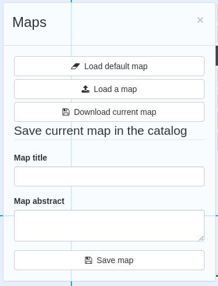
Figure 3.2.1: The Map dialog for the interactive map
- Print current map- Create a pdf of the current map. There are options to add a title and description, plus the ability to change the layout and choose scale and legend options. The area that will be printed will be highlighted on the map.
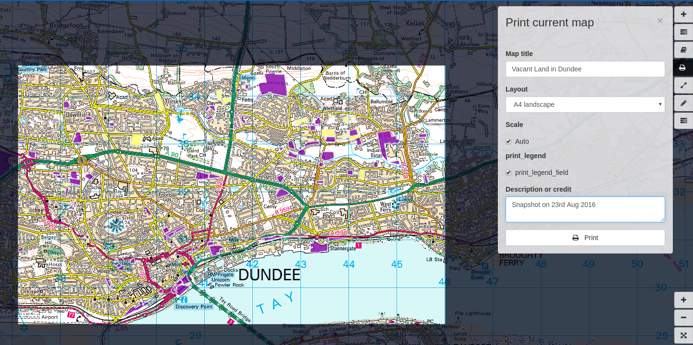
Figure 3.2.2: Printing the map
- Measure- draw a line on the map to measure it’s length. Single-click to create a node and double-click to finish.
- Annotations- draw freehand on the map. Click the Add button to choose from Point, Line, Polygon or Text, activating a simple styling dialog for the type that you’ve chosen. Draw on the map, using a single click to draw a node (where appropriate) and a double click to finish. There are options to modify the annotation or remove it. The resulting annotation can be saved as a json file for use in other applications, or a json file can be loaded for use in this dialog.
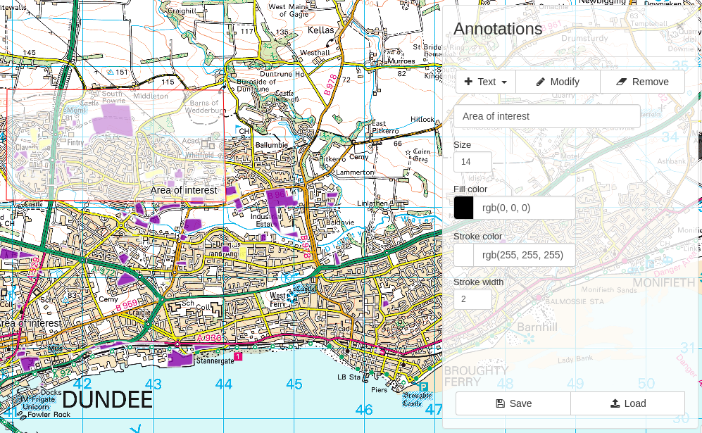
Figure 3.2.3: Annotating the map
- Change projection- select one of the supported projections from the dropdown list
- Zoom in and out
- Zoom to initial map extent- this will zoom to the entirety of Scotland
- Zoom to your position- this will only work if your location can be calculated by the browser
- Graticule- add a grid to the map (in lat/long)
Adding Discovery Metadata to the SSDI¶
This section guides you through the process of adding new metadata records into the SSDI catalogue using either the online metadata editor or the metadata import tool, based on XML documents. To add or edit data and metadata, you must be registered as an Editor in the SSDI catalogue. Contact the Scottish Government SSDI Metadata email address (SSDI.Metadata@gov.scot) if you would like to become a registered editor for the SSDI.
To produce a good metadata record, always try to gather as many details as possible on the resource that you want to describe, taking into account the metadata elements that are explained in the next section (Metadata Elements). The next step is to properly fill out the fields provided by the metadata template, while at the same time avoiding duplication of information throughout the form.
The table below indicates the mandatory and optional fields according to the UK Gemini 2.2 standard.
Table 4.0.1: Mandatory and optional information for dataset metadata
| Mandatory Fields | Optional Fields |
|---|---|
Title Abstract Unique Resource Identifier Dataset Language Resource Locator (Online Resource) Spatial Reference System Topic Category Keyword Bounding Box Temporal Extent Dataset Reference Date Frequency of Update Spatial Resolution Lineage Use Constraints Limitations on Public Access Responsible Organisation Metadata Point of Contact Metadata Date Metadata Language Resource Type |
Alternative Title Additional Information Source Geographic Location/Extent Vertical Extent Equivalent Scale Data Format Data Quality (Conformity) |
To edit or import metadata records, you must be logged in. To log on to the metadata tool, go to the top right-hand corner of the header menu. Here you can enter the system credentials provided by the system administrator and then click the Sign In button. You are now logged on and the Sign Out button will now be visible, along with a button Contribute that expands to Add new record, Import new records, and Manage directory.
Creating dataset and service metadata from a template¶
To add dataset or service metadata to the SSDI, click on the Contribute button. This will enable the Editing board, where you can see all the records you have access to, the advanced search interface, and buttons on the right to Add new record, Import new records, and Manage directory.
Clicking Contribute in the header menu, and then clicking Add new record will display a list of available templates. Note there could be multiple templates with the same name if you are an editor for multiple groups. Select the appropriate template based on the type of resource that is being documented. Then select your organisation’s folder and click Create.
Users can then enter UK Gemini 2.2 compliant metadata in the editable form provided. This will load in the simple Default view, or can be changed to Advanced or XML view by clicking the eye icon on the top right of the page. More help on the various meanings of the metadata elements can be found in the section (Metadata Elements).

Figure 4.1.1: Blank dataset metadata template form
Note that the templates for dataset and service metadata are slightly different. Metadata for a service has extra elements for the spatial data service type (i.e. view, download, etc.) and for coupled resources.
Assigning a category¶
A new Metadata record has to be categorised. This is done via Categories button, the left-most button of the menu at the top of the page. All dataset records should be categorised as Datasets and all service records should be categorised as Interactive resources. Once a category is selected it should appear highlighted, and a second click on the menu button will close the menu.
Creating a metadata record¶
The templates have a  where you can add an element or another
occurrence of an element (or section). For example, you could have a
range of Alternative Titles. Where an
where you can add an element or another
occurrence of an element (or section). For example, you could have a
range of Alternative Titles. Where an  appears, you can delete
the associated metadata element or section.
appears, you can delete
the associated metadata element or section.
Mandatory fields (e.g. Abstract) that are highlighted with a red asterisk. Note that for sub-elements, this only indicates that the sub-element is mandatory within its context. For example, the Vertical Extent is an optional element, but if you have one, then the minimum and maximum values are mandatory.
The arrows ( or
or  ) allow you to move that section up or
down the document order. Note that Gemini 2.2 is not concerned with the
order that sections appear in.
) allow you to move that section up or
down the document order. Note that Gemini 2.2 is not concerned with the
order that sections appear in.
Content, such as keywords, can be added either manually by clicking Add new keywords or from pre-existing thesauri by clicking on the icon or by selecting them in a thesuarus. Thesauri are available for INSPIRE themes (GEMET) or Regions.
Select the appropriate thesaurus. This will add a new section, with the title of the selected thesaurus. Clicking the ‘Search’ box will display a drop-down list of keywords, which you simply click to add to your metadata record.
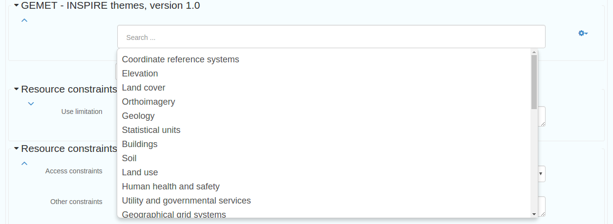
Figure 4.1.2: Inspire theme thesaurus
For detailed guidance on filling out each element, see the metadata elements section. Note that although the basic functionality you need to fill in the metadata records is available in the Default view, additional functionality can be found in the Advanced view.
Uploading metadata from an existing XML file¶
Please read the guidance below, and review Annex3. before importing metadata into the catalogue.
To upload a record (such as an xml exported from ArcCatalog, click on Contribute in the header menu and select Import new records. This page gives you the option to upload from your computer, copy/paste or import a record from the server. The page also gives you the option to select the file type, type of record,
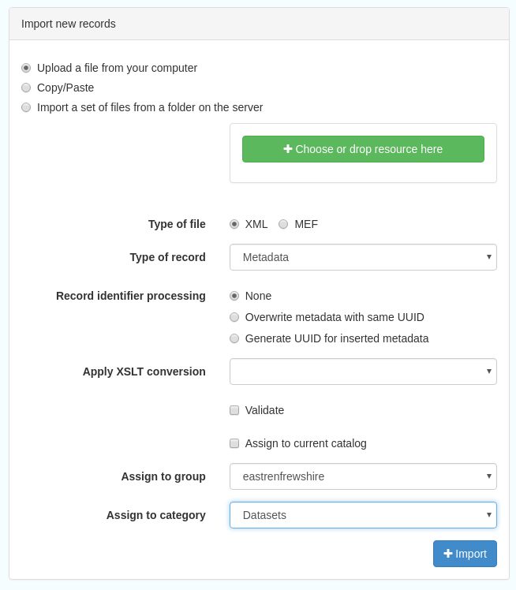
Figure 4.2.1: the Import Metadata Record menu
Users must consider the appropriate Import Actions. If you are uploading to create a new metadata record then choose the ‘Generate UUID for inserted metadata’. If you are uploading in order to refine or change an existing record on the SSDI, then choose the ‘Overwrite metadata with the same UUID’. If the XML contains a UUID that does not already exist on the SSDI but you would like to keep this UUID then the None option should be selected.
The UUID is a generated automatically by whatever internal system (i.e. ESRI ArcGIS ArcCatalog) was used to write and manage your metadata. In xml, it can be found at the top of the page under the file identifier section. Within the SSDI, the UUID or File Identifier can be found at the bottom of the metadata record display (see Figure 4.2.2). This UUID, together with the metadata date stamp, are used to ensure records are unique within the SSDI, data.gov.uk and other metadata catalogues like MEDIN.
Users should also consider an appropriate XSL Transformation. For an xml that is already in Gemini 2.2 format, review the guidance in Annex3. If the record contains these elements, leave Apply XSLT conversion option blank.
If the metadata does not contain these elements but is otherwise in Gemini 2.2 format, then select the custom-update-schema conversion in the Apply XSLT conversion drop down box.
To upload a non-Gemini 2.2 xml, select the appropriate conversion from the Apply XSLT conversion drop down box. For example, a metadata record created in ESRI ArcCatalog needs to be converted using the ESRI_ISO_to_GEMINI_22 XSLT conversion.
Users should NOT check the Validate box during upload - if there are errors in the validation process, the metadata will not be uploaded. The recommended validation technique is to upload without validation, and then go through the SSDI validation process described in the next section.
Click Import and the record will be uploaded, generating an Import Report. To review, edit and validate the metadata record you have imported, click on the Contribute button and your new metadata record should be at the top of the list. Click the pencil icon to reach the editing page, where you should validate the record using the steps in the following section. You may need to edit the record to make it fully Gemini 2.2 compliant. Common issues encountered when converting between ESRI ISO and Gemini 2.2 can be found in the Annex 2.
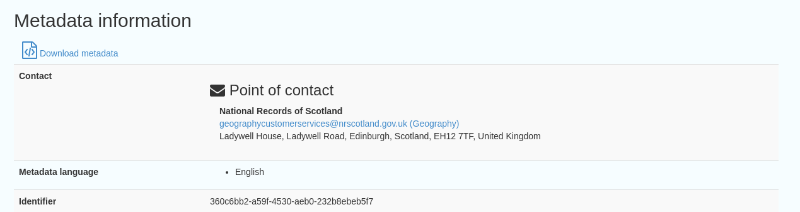
Figure 4.2.2: the UUID is located under the fileIdentifier tag in XML, and at the bottom of the metadata entry on the SSDI
Saving and validating metadata¶
As the user works through the template filling in required elements, the Save metadata button at the top right of the screen may be used to save the record in progress. Once the record has been completed, the user may click Save and Close to save the record and exit the editing mode. Users should note that this action will not save a copy of the metadata locally, only on the server. It is recommended that all master copies of metadata should be stored within the data provider’s own system.
Once all elements for a new record have been completed or changes have been made to an existing record, it should be validated against the Gemini 2.2 standard rules. This can be done by clicking on the Validate button at the top or bottom of the page, or refreshing the validation report in the panel on the right hand side of the editor window.
A Validation dialogue box will appear on the right of the screen highlighting any errors that need to be corrected. Click on the red thumbs-down icon to see details of the errors, organised in sections by schematron. Solutions to errors are not always obvious from the messages given; Annex 2 of this document provides a list of common error messages encountered and how to resolve them. Users can still save a metadata record that has not been validated and come back to it later.
Note: In order to validate, each dataset metadata record must have a keyword from the GEMET - INSPIRE themes, version 1.0 thesaurus and each service metadata record must have a keyword from the INSPIRE Service taxonomy thesaurus.
The validation check should be repeated once amendments have been made until no errors are detected. Once validation is successfully completed, click on the Save and Close button. When viewing the record (not in an editing session) there is an option to save as an XML file clicking on the actions drop down menu (top left) and selecting ‘save as XML’. The metadata record will appear in a new tab in XML format and users can then save by going to File then Save as.
Publishing a metadata record¶
Once a metadata record has been saved and successfully validated, it can then be published, making it publicly viewable on the SSDI.
Click on Contribute in the header menu, and locate your metadata record in the list below. The Privileges pane is accessed by clicking on the grey padlock that appear in line with the title of the record. Note that if this padlock is locked, your metadata record is unpublished, and if it is unlocked, it is published.
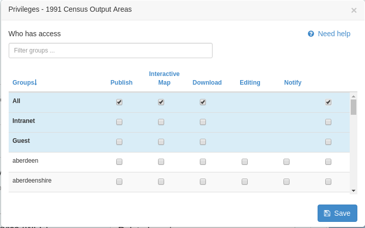
Figure 4.4.1: Publishing a metadata record
Alternatively, click on the record to go to its individual page in the SSDI. Privileges can be selected from the drop down menu accessed by clicking the down-pointing arrow next to the Edit and Delete icons at the top right of the screen.
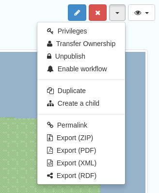
Figure 4.4.2: Menu to alter privileges and access other settings
Within the Privileges pane, check each of the tick boxes in the row marked All. This means the record is now publicly viewable on the SSDI and that the metadata record is available for harvesting to data.gov.uk.
Click Submit to complete the action.
You will also note that the drop down menu has a publish/unpublish option: this is a shortcut to publish the record. After pressing this, you should see the changes in the Privileges pane.
Editing and deleting a metadata record¶
When you search for a metadata record, and assuming you have the login rights, you will be able to edit or delete the record using the edit or delete buttons at the top right hand side of the page. Once in editing mode, the options are identical to those of metadata creation. To delete the metadata record, select the Delete button and you will be prompted to confirm.
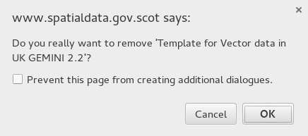
Figure 4.6.1: A confirmation screen is displayed when deleting a metadata record
Users should note that the metadata record may continue to appear on the screen until you move to another page (i.e. Home).
Associated Resources¶
The Associated Resource wizard can be used in place of the standard editing interface to create both Coupled Resources and Online Resource Locators.
A Coupled Resource is used to link a dataset’s metadata record to both the service directly and the corresponding metadata record for the service. Linking a dataset metadata record to a service metadata record automatically generates a Coupled Resource within the service metadata record. A service metadata record will therefore have one Coupled Resource per Dataset or layer in the service.
Users can create the Coupled Resources relationship either from the dataset, or from the service, using the Associated resources wizard (at the right hand side of the page, or at the bottom of the page if you are accessing the SSDI on a small screen). For a dataset, select the Link to a service option. Use the search function to look up the metadata record for every service that the Dataset is included in. Once added, these should appear under the Service heading at the right hand side.
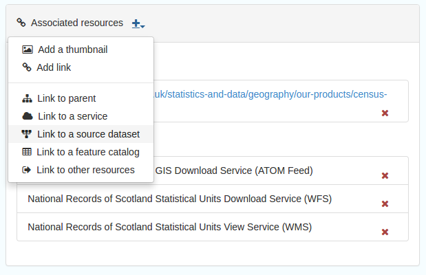
Figure 4.7.1: Creating the Coupled Resource relationship
Secondly, users should create an Online Resource Locator for the dataset. From the Associated resources wizard select Add link. This will open a new screen. Users should firstly select the correct Protocol for their service, then enter in the url of their service. For WMS, if the URL is correctly entered a list of layers will be generated, with the format WMS Title(WMS Name). Select the correct layer, so that it is highlighted in green. This will populate the Resource Name and Description elements for the Online Resource Locator with the WMS Layer Name and Title respectively.
Note: Having pasted in the url for the WMS, and having generated a list of resources, please ensure that the selected resource is highlighted green.
Finally, click Add Link, and check that the online resource has been added. This step should be repeated for every online resource affiliated with the dataset.
To edit the link, or to add the optional Function element, use the standard editing interface and go to the Distribution/Online resource section.

Figure 4.7.2: Linking an online resource to the current metadata
Note that the previous SSDI website did not require the WMS Online Resource Locator to point to the correct layer name from the service. However the present site requires this for the layer to be searched for and added into the Map view. If you can’t see the layer name in the Map view, then you should re-add the WMS using the Associated Resource wizard in the dataset metadata record and ensure the Resource Name and Description fields are populated as described above.
Note also that for some dataset metadata records when using the Add to map function the layer name may be blank. To resolve this you must delete and re-add the url to the WMS using the steps outlined above, and select the correct resource name, or edit the Resource in the standard editing interface.
You can check the relationship between Coupled Resources by viewing the metadata record of the service related through the steps above. Within the front page of the Service metadata record you should see the related Dataset listed under Associated resources. The process above does work in reverse; individual Datasets can be registered as related resources within the metadata record of a service.
Note: The Associated Resources wizard cannot currently be used to add GetCapabilities Online Resource Locators for Services. This process must be done using the standard editing interface. For services, the Add to Map button will be present but will not work. To add a service to the Map, go to the Map page and add the GetCapabilities URL in the Add Layers dialogue, from where you will be able to pick layers to display on the map.
Managing directories¶
Directories are a means of automatically populating fieldsm such as those for the Metadata point of contact section of a metadata record with pre-written values. This is useful if you have to create multiple records that share the same point of contact. Note that while directory entries allow a user to add a field identiying an individual as a point of contact, this field should be left empty. For additional details see below.
Directories are managed by clicking on the drop-down menu next to the Contribute button and clicking Manage directory, or by selecting Manage directory from within the Contribute page.
To create a directory entry, firstly duplicate an existing record. These appear under Entries, and one should have a reference to it being a template within its title. Alternatively you can duplicate a previous record you have created yourself. To duplicate a record, click the icon at the bottom right of an existing entry. This icon looks like two overlapping sheets of paper, and is shown below.

Figure 4.8.1: Duplicate an existing directory entry
Clicking this icon will generate a new record with the title as the record copied. By then clicking on the duplicate entry you can alter the fields with information relevant to an individual within your organisation.
Note: The individual name field, as part of the Metadata point of contact section in a metadata record, is not mandatory, and for a record to meet the requirements of the Gemini 2.2 standard this field should be left empty. The Metadata point of contact section should only to refer to the organisation responsible for the creation and maintenance of the metadata, and the contact position within the organisation.
Metadata Elements¶
The following sub-sections provide guidance on how to fill in each Gemini 2.2 metadata element. Use the navigation bar to jump to a particular element. Each section is named by the GEMINI element, but the INSPIRE and ISO 19115 elements are also named, along with the obligation, definition, guidance and examples.
It is recommended that users also consult the full guidance on Gemini 2.2, which can be found at:
http://www.agi.org.uk/about/resources/category/81-gemini?download=18:gemini-2-2
The How to define INSPIRE compliant data in the SSDI sub-section is important to note if your datasets are covered by the INSPIRE directive.
How to define INSPIRE compliant data in the SSDI¶
To define within the metadata if a dataset is compliant with INSPIRE, users should ensure the Keyword section is completed. If the dataset is covered by INSPIRE (e.g. parts of it are within the Scope of an INSPIRE Annex data specification), then the first keyword should be from the GEMET INSPIRE themes which can be found at:
http://www.eionet.europa.eu/gemet
If another controlled vocabulary is used as the first keyword, such as the IPVS – Integrated Public Sector Vocabulary (version 2), then the dataset is not covered by INSPIRE. That said, the dataset and service metadata will still be required to comply with the operation and service commitments of the SSDI, as set out on SSDI Metadata Requirements.
Title¶
Equivalent INSPIRE element: Resource title
Equivalent ISO 19115 element: MD_DataIdentification.citation > CI_Citation.title
Dataset obligation: Mandatory (one)
Service obligation: Mandatory (one)
Definition: A unique and readily recognisable name for the resource. The title should be the formal name if one exists.
Guidance: The Title will be a searchable field in both a UK and European context and as such should be clear and concise.
Example:
• Nitrate Vulnerable Zones
Alternative title¶
Equivalent INSPIRE element: none
Equivalent ISO 19115 element: MD_DataIdentification.citation > CI_Citation.alternateTitle
Dataset obligation: Optional (many)
Service obligation: Optional (many)
Definition: Any short name, other name, acronym or alternative language title for the resource.
Guidance: Should be provided when the data resource has more than one Title. It can also be helpful to include title with spatial or temporal coverage if applicable. Alternative titles will be searchable in the UK context.
Example:
• NVZ
Abstract¶
Equivalent INSPIRE element: Abstract
Equivalent ISO 19115 element: MD_DataIdentification.abstract
Dataset obligation: Mandatory (one)
Service obligation: Mandatory (one)
Definition: A brief narrative summary of the data resource.
Guidance: The Abstract should provide a clear and concise statement of the content of the dataset (i.e. the ‘what’ aspect of the dataset), and not general background information. Jargon and abbreviations should be avoided, as this element should be understood by non-experts.
Example:
•“Data zone centroids are point features that represent the population weighted centre of data zones – the key geography for the dissemination of small area statistics in Scotland. These centroids are used to link data zones to other (higher level) geographies and produce a ‘best-fit’ match. Data zones can then be aggregated to approximate this larger area of interest or higher level geography that statistics wouldn’t normally be available for. Data zones also represent a relatively stable geography that can be used to analyse change over time, with changes only occurring after a Census. Following the update to data zones using 2011 Census data, there are now 6,976 data zones covering the whole of Scotland.”
Unique resource identifier¶
Equivalent INSPIRE element: Unique resource identifier
Equivalent ISO 19115 element: MD_DataIdentification.citation > CI_Citation.identifier
Dataset obligation: Mandatory (one)
Service obligation: Optional (one)
Definition: A value uniquely identifying the data resource within your organisation (i.e. how your organisation references the dataset).
Guidance: The Code element is mandatory, and should be a recognisable identifier within the context of your organisation (i.e. a unique code of numbers, letters or combination of referring to a single dataset). If it is not guaranteed to be unique across UK Location and INSPIRE, then the Codespace sub-element must be specified; this should be the internet domain of the data provider/owner. The Authority and Version sub-elements can be ignored.
NOTE: When inserting a new Unique resource identifier, it is best to select “Identifier (gmd:RS_Identifier)” before clicking the ‘+’, as the alternative (gmd:MD_Identifier) does not allow for the Codespace.
Example:
• For the Data Zone Centroids 2011 dataset provided by Scottish Government: Code: SG_DataZone_Cent_2011, Codespace: www.gov.scot
Dataset language¶
Equivalent INSPIRE element: Resource language
Equivalent ISO 19115 element: MD_DataIdentification.language
Dataset obligation: Conditional (many)
Service obligation: Conditional (many)
Definition: The language used within the dataset (assuming the data resource contains text/written information, e.g. in attribute tables).
Guidance: It is recommended to select a value from a controlled vocabulary, for example ISO 639-2 which uses three-letter primary tags with optional subtags. The values for UK languages are:
- English – eng
- Welsh – cym
- Gaelic (Irish) – gle
- Gaelic (Scots) – gla
- Cornish – cor
- Ulster Scots - sco
This element is set to ‘eng’ in the SSDI templates. In the majority of cases no change to this will be required. Where Scottish Gaelic is used within the dataset (i.e. place names), this can also be added.
NOTE: For records covered under INSPIRE, the language must be one of the 24 official languages of the European Union, which for UK purposes would be English (eng). If the dataset is also available in another language (e.g. Scots Gaelic), then a second metadata record must be provided for that language.
OnLine resource (Resource locator sub element)¶
Equivalent INSPIRE element: Resource locator
Equivalent ISO 19115 element: MD_Distribution > MD_DigitalTransferOptions.online > CI_OnlineResource.linkage
Dataset obligation: Conditional (many)
Service obligation: Conditional (many)
Definition: Location (address) for on-line access using a Uniform Resource Locator (URL) address scheme. The resource locator has to be an http URL.
Guidance: This element of the dataset metadata should contain the WMS/WFS service URL. The URL should be the location the data can be downloaded and may be different from where it can be ordered. Multiple entries are allowed if more than one service is provided.
The three additional sub-elements (Name, Description and Function) are optional, but provide helpful details for users.
NOTE: WMS, WMTS and KML can be added to the map view in the SSDI. For the layer picker in the map view to display the layer name correctly, the Name sub-element should match the name of the layer in the service. This can be found in the <Name> tag of the service XML.
Example:
- http://sedsh127.sedsh.gov.uk/arcgis/rest/services/ScotGov/StatisticalUnits/MapServer/exts/InspireView/service?Service=WMS&request=GetCapabilities&version=1.3.0 with Name as Broad_Rental_Market_Areas__2009_
Coupled resource¶
Equivalent INSPIRE element: Coupled resource
Equivalent ISO 19115 element: operatesOn
Dataset obligation: N/A
Service obligation: Conditional (many)
Definition: Unique Resource Identifier (URI) of the datasets that the service operates on.
Guidance: Applicable to service metadata only. This must be completed for every dataset included in the service (i.e. portrayed as a view service layer).
Coupled resource sections can be added by clicking on the ‘+’ in the Associated Resources wizard. Further instructions can be found in the Associated Resources section.
Spatial reference system¶
Equivalent INSPIRE element: none
Equivalent ISO 19115 element: MD_ReferenceSystem.referenceSystemIdentifier > RS_Identifier.code
Dataset obligation: Mandatory (one)
Service obligation: Conditional (one)
Definition: Identifier of the system of spatial referencing.
Guidance: Identify the spatial reference system used to spatially reference the data in the data resource.
Each coordinate reference system has an EPSG code, which can be accessed at the EPSG Geodetic Parameter Dataset site.
For the SSDI, the two most common spatial reference systems are pre-populated in the templates: OSGB 1936 and ETRS89. You should remove the one you do not need. If any other spatial reference system is required, in the advanced metadata editor view (accessed by clicking the eye icon in the top left), the Ref system tab has a reference system picker where you can search for any spatial reference system.
Additional information¶
Equivalent INSPIRE element: none
Equivalent ISO 19115 element: MD_Identification > MD_DataIdentification.supplementalInformation
Dataset obligation: Optional (one)
Service obligation: Optional (one)
Definition: Other descriptive information about the data resource.
Guidance: Provide a URL(s) that links to other documents related to the resource.
This should be used to link to other sources of descriptive information about the resource. It should not be used to record the link to the online resource.
Example:
• For Data Zones 2001, a link to the document outlining how they were created was provided: http://www.scotland.gov.uk/library5/society/sndata-00.asp
Topic category¶
Equivalent INSPIRE element: Resource topic category
Equivalent ISO 19115 element: MD_DataIdentification.topicCategory
Dataset obligation: Mandatory (many)
Service obligation: Optional (many)
Definition: Describes the main theme(s) of the dataset.
Guidance: Select from the drop down list one or more categories that most closely represent the topic of the data resource. This will dictate which categories the dataset is listed within from “Topics” tab on the SSDI homepage. If more than one topic is applicable then the ‘+’ icon should be used to add another Topic category element.
Choices available in the dropdown list are:
- Biota
- Boundaries
- Climatology, meteorology, atmosphere
- Economy
- Elevation
- Environment
- Farming
- Geoscientific information
- Health
- Imagery base maps earth cover
- Inland waters
- Intelligence military
- Location
- Oceans
- Planning cadastre
- Society
- Structure
- Transportation
- Utilities and communication
Greater detail for the topic of a particular dataset can be given through the Keyword element. Not all sectors are included (i.e. Historic) and some form of agreement needs to be made as to which topic these sectors are assigned.
Keyword¶
Equivalent INSPIRE element: Keyword
Equivalent ISO 19115 element: MD_Identification.descriptiveKeywords > MD_Keywords
Dataset obligation: Mandatory (many)
Service obligation: Mandatory (many)
Definition: The topic of the content of the data. These should be more specific than those entered under Topic category.
A sub-element of this is the Originating controlled vocabulary, which is the name of the formally registered thesaurus or a similar authoritative source of keywords.
Guidance: Keyword values should be taken from a list standard subject categories, identified in the ‘originating controlled vocabulary’ element. If the dataset is covered under INSPIRE, then the first keyword should be from the General Environmental Multi-Lingual Thesaurus (GEMET), which can be found at:
http://www.eionet.europa.eu/gemet
If another controlled vocabulary is used then this should be stated.
The Assigning a category section describes how to add a keyword from a thesaurus.
Example:
• Keyword: Address, Originating controlled vocabulary: GEMET Thesaurus version 1.0, vocabulary publication date 2009-06-30.
• Keyword: Farming, Originating controlled vocabulary: IPVS – Integrated Public Sector Vocabulary version 2, revision date 2006-04-02
Extent (Geographic element)¶
Equivalent INSPIRE element: none
Equivalent ISO 19115 element: MD_DataIdentification.extent > EX_Extent > EX_GeographicExtent > EX_GeographicDescription.geographicIdentifier
Dataset obligation: Optional (many)
Service obligation: Optional (many)
Definition: The spatial extent or coverage of the data resource.
Guidance: Select a pre-defined extent from the drop down box at the top of the map, either by country or local authority, or draw a rectangle on the map. Values for the North, East, West, and South bounding coordinates will then be automatically filled. The default is Scotland. You can also change the coordinate system of this field using the drop down at the top of the map.
West bounding longitude¶
Equivalent INSPIRE element: Geographic bounding box
Equivalent ISO 19115 element: MD_DataIdentification.extent > EX_Extent > EX_GeographicExtent > EX_GeographicBoundingBox
Dataset obligation: Mandatory (one)
Service obligation: Mandatory (one)
Definition: Western most limit of the dataset expressed in longitude in decimal degrees (positive east)
Guidance: Approximate values to identify the data on a global basis are required. If a pre-defined extent is chosen in the Geographic element, a value will be automatically provided. Alternatively, a box can be drawn on the map.
The west bounding longitude should be less than the east bounding longitude.
East bounding longitude¶
Equivalent INSPIRE element: Geographic bounding box
Equivalent ISO 19115 element: MD_DataIdentification.extent > EX_Extent > EX_GeographicExtent > EX_GeographicBoundingBox
Dataset obligation: Mandatory (one)
Service obligation: Mandatory (one)
Definition: Eastern most limit of the dataset expressed in longitude in decimal degrees (positive east)
Guidance: Approximate values to identify the data on a global basis are required. If a pre-defined extent is chosen in the Geographic element, a value will be automatically provided. Alternatively, a box can be drawn on the map.
The east bounding longitude should have a greater value than the west bounding longitude.
North bounding latitude¶
Equivalent INSPIRE element: Geographic bounding box
Equivalent ISO 19115 element: MD_DataIdentification.extent > EX_Extent > EX_GeographicExtent > EX_GeographicBoundingBox
Dataset obligation: Mandatory (one)
Service obligation: Mandatory (one)
Definition: Northern most limit of the dataset expressed in latitude in decimal degrees (positive north)
Guidance: Approximate values to identify the data on a global basis are required. If a pre-defined extent is chosen in the Geographic element, a value will be automatically provided. Alternatively, a box can be drawn on the map.
The north bounding latitude must be greater than the south bounding longitude.
South bounding latitude¶
Equivalent INSPIRE element: Geographic bounding box
Equivalent ISO 19115 element: MD_DataIdentification.extent > EX_Extent > EX_GeographicExtent > EX_GeographicBoundingBox
Dataset obligation: Mandatory (one)
Service obligation: Mandatory (one)
Definition: Southern most limit of the dataset expressed in latitude in decimal degrees (positive north)
Guidance: Approximate values to identify the data on a global basis are required. If a pre-defined extent is chosen in the Geographic element, a value will be automatically provided. Alternatively, a box can be drawn on the map.
The south bounding latitude must be smaller than the north bounding latitude.
Vertical extent information¶
Equivalent INSPIRE element: none
Equivalent ISO 19115 element: MD_DataIdentification.extent > EX_Extent > EX_VerticalExtent
Dataset obligation: Optional (one)
Service obligation: Optional (one)
Definition: Describes the vertical domain (height range) of the data resource.
Guidance: This element should be completed where relevant (e.g. geology, mining, etc.). This can be added within the Identification tab of the Advanced editor view. Sub-elements are the minimum, maximum value and the coordinate reference system to which the minimum and maximum were measured.
Temporal extent¶
Equivalent INSPIRE element: Temporal extent
Equivalent ISO 19115 element: EX_Extent > EX_TemporalExtent.extent
Dataset obligation: Mandatory (one)
Service obligation: Conditional (one)
Definition: This is the date(s) that describes the time period covered by the content of the dataset. It may refer to the (1) period of collection of the data or (2) the date at which it is deemed to be current.
Guidance: Temporal extent is the date of the validity of the data, and is different from the Dataset reference date.
Dates may be to any degree of precision, from century (YY) to full date and time. The extended date format (YYYY-MM-DD) should be used, where YYYY is the year, MM the month, and DD the day. If required, time (HH:MM:SS, where HH is the hour, MM the minute, and SS the second) may be added, with ‘T’ separating the two parts. Periods are recorded as {fromdate/todate} (e.g. 2006-04-01/2007-03-31). Either the from date or the to date (but not both) may be left blank to indicate uncertainty.
Example:
• For the Urban Rural Classification, the Temporal extent can be entered as 2013 to 2014.
Dataset reference date¶
Equivalent INSPIRE element: Date of publication
Equivalent ISO 19115 element: MD_Identification.citation > CI_Citation.date
Dataset obligation: Mandatory (many)
Service obligation: Mandatory (many)
Definition: Reference date for the data resource, indicating the date of publication, creation or last revision.
(NOTE: for services, this date relates to the creation, publication, and/or revision of the service, not the dataset(s) within it.)
Guidance: The Dataset reference date is a notional date of “publication” of the data resource. It is different from the Temporal extent, which is the date of currency of the data. Multiple dataset reference dates can be defined but there can only be one ‘creation date’.
Dates may be to any degree of precision, from century (YY) to full date and time. The extended date format (YYYY-MM-DD) should be used, where YYYY is the year, MM the month, and DD the day. If required, time (HH:MM:SS, where HH is the hour, MM the minute, and SS the second) may be added, with ‘T’ separating the two parts. Periods are recorded as {fromdate/todate} (e.g. 2006-04-01/2007-03-31). Either the ‘from date’ or the ‘to date’ (but not both) may be left blank to indicate uncertainty.
Example:
• If the dataset has been created as part of legislation the date should be the date of enactment of that piece of legislation. For example, the Broad Rental Market Area boundaries were defined in accordance with the Rent Officers (Housing Benefit Functions) (Amendment) Order 2008, which came into force on January 5th, 2009; therefore this date was entered as the original ‘creation’ date whereas July 2015 is used as the date for the particular version of the dataset.
• If the dataset has been created in support of a publication the date of the publication should be used. For example, the Urban Rural Classification 2013-2014 was published on November 28th, 2014.
Frequency of update¶
Equivalent INSPIRE element: none
Equivalent ISO 19115 element: MD_MaintenanceInformation.maintenanceAndUpdateFrequency
Dataset obligation: Mandatory (one)
Service obligation: Conditional (one)
Definition: Describes the frequency with which modifications and deletions are made to the data resource.
Guidance: Choose the appropriate frequency from the drop down list. If the update cycle is unknown, please choose “Unknown” from the list.
Example:
• For datasets that are updated on request, choose “As needed”.
Spatial resolution¶
Equivalent INSPIRE element: Spatial resolution
Equivalent ISO 19115 element: MD_Identification.spatialResolution > MD_Resolution.distance
Dataset obligation: Conditional (one)
Service obligation: Conditional (one) (only when there is a restriction on the resolution of the service)
Definition: A distance measure of the granularity of the data (in metres), giving an indication of how detailed it is.
Guidance: Resolution identifies the smallest distance on the ground that can exist between two adjacent points. Values must be entered as a real number.
For data captured in the field, it is the precision at which the data is captured. This may be the accuracy for topographic surveys, or the average sampling distance in an environmental survey. For data taken from maps, it is the positional accuracy of the map. For image data, it is the resolution of the image.
For Gemini and INSPIRE this value has to be specified in meters and the recommended coding to specify this (in the units of measure sub-element) is:
Example:
• For Aerial Photography, the *Units of measure is specified as urn:ogc:def:uom:EPSG::9001, and the value for the Spatial Resolution is 0.25*
Equivalent scale¶
Equivalent INSPIRE element: Spatial resolution
Equivalent ISO 19115 element: MD_Identification.spatialResolution > MD_Resolution.equivalentScale > MD_RepresentativeFraction.denominator
Dataset obligation: Optional (one)
Service obligation: Optional (one)
Definition: The level of detail expressed as the scale denominator of a comparable hardcopy map or chart.
Guidance: Scale information can be given that identifies what scale the data was captured at and/or to identify what the best display scale is. Where data is captured from a known source, the scale of that map should be recorded. Values should be entered as positive integers.
Expression of spatial resolution by distance is preferred (see Spatial resolution element). Spatial resolution should only be expressed by equivalent scale when a distance cannot be determined.
Example:
• For data captured from Ordnance Survey 1:10,000 Raster, the Denominator can be entered as 10000
Hierarchy level¶
Equivalent INSPIRE element: Hierarchy level
Equivalent ISO 19115 element: MD_Metadata.hierarchyLevel
Dataset obligation: Optional (one)
Service obligation: Optional (one)
Definition: A sub-element of Data quality information, the specific extent of the data to which the data quality information applies.
Guidance: Not required for GEMINI, and is currently ignored within UK Location. Default is set to dataset, or other options can be selected from the dropdown list.
Example:
• Hierarchy level is set to ‘dataset’ in the UKLP dataset template, and ‘service’ in the UKLP service template.
Conformity¶
Equivalent INSPIRE element: Conformity - degree
Equivalent ISO 19115 element: DQ_DataQuality > DQ_Element.result > DQ_ConformanceResult
Dataset obligation: Conditional (many)
Service obligation: Conditional (many)
Definition: Nested within Data quality information, this is the degree of conformity with the product specification or user requirement against which the data is being evaluated (i.e. degree of conformity to INSPIRE). Comprised of the Specification, Explanation, and Degree sub-elements.
Guidance: To be conformant to INSPIRE data specifications, provide the title and date for the specification, explanation and degree. For the explanation, a URL for the specification can be entered. Then, to claim conformance, check the box labelled Degree.
If users are not claiming conformity with INSPIRE, then this element can be removed by clicking on the ‘x’ at the Report level. If the tick box is not available, or you wish to reintroduce, choose “Domain consistency” when adding the “Report”, then “Conformity” for the “Result”. Then you can provide the title and date for the Specification, Explanation and Degree.
NOTE: at present a dataset is unlikely to be fully conformant, until mapping of the data to an INSPIRE data specification schema (i.e. mapping to GML) has occurred for full interoperability, which will come in future phases of INSPIRE implementation.
Example:
• To cite Inspire specifications for services metadata, Specification title: Technical Guidance for the implementation of INSPIRE View Services Version 3.1”, Date: 2011-11-07, Explanation: “See the referenced specification at: http://inspire.jrc.ec.europa.eu/documents/Network_Services/TechnicalGuidance_ViewServices_v3.1.pdf”
Lineage¶
Equivalent INSPIRE element: Lineage
Equivalent ISO 19115 element: DQ_DataQuality.lineage > LI_Lineage.statement
Dataset obligation: Mandatory (one)
Service obligation: Optional (one)
Definition: A sub-element of Data quality information. This section should describe how the dataset was created. Brief technical description should be given noting any sources and processes used. This will be useful in determining whether the data is fit for purpose.
Guidance: Information regarding methods of updating, quality controls and resolution should be recorded under this element. The Lineage differs from the Abstract in that it covers ‘how’ the dataset was created as opposed the ‘what’ and ‘why’ of the dataset.
Notes on any coding and order of features should be made. Further, it is helpful to list any attributes with a brief description of their meaning. Any procedures or protocol associated with the update of the dataset should also be noted, along with notes on previous updates.
Example:
• For Nitrate Vulnerable Zones: The Nitrate Vulnerable Zone boundaries were delineated by the Geographic Information Science and Analysis Team (GI-SAT) on behalf of the Environmental Quality Division. The first step was to look at the previous NVZ boundaries from 2002 and compare them with ground water body data from BGS and Scottish Water. This information was used to produce a first draft of the new boundaries, which were then clipped to field boundaries and put out to consultation. Following responses amendments were made and also consideration of estimated borehole catchment from Scottish Water. Next, boundaries were re-adjusted to fields and the mean high water spring (unless fields fell below the mean high water spring). An amendment was made to the River Nith and Lochar Water, such that field and mean high water boundaries are followed further up the estuary.
Data format¶
Equivalent INSPIRE element: none
Equivalent ISO 19115 element: MD_Distribution.distributionFormat > MD_Format
Dataset obligation: Optional (many)
Service obligation: Optional (many)
Definition: This is the format in which the digital data can be provided.
Guidance: The name of the format and the version can be selected from a drop down list. Entries should be recognised formats for data transfer, either standard or proprietary. If the data is not transferable (e.g. view only), then this should be stated.
Recommended best practice is to select a value from a controlled vocabulary, such as PRONOM (see http://www.nationalarchives.gov.uk/PRONOM/Default.aspx).
Example:
• For services: WMS, Version 1.3.0
• ESRI Arc/View Shapefile, Version 1.0
Legal constraints¶
Equivalent INSPIRE element: Limitations on public access
Equivalent ISO 19115 element: MD_Identification > MD_Constraints > MD_LegalConstraints.otherConstraints
Dataset obligation: Mandatory (many)
Service obligation: Mandatory (many)
Definition: Restrictions on access to the data that are imposed for security and other reasons (i.e. who can see the data). Sub-elements are Use constraints, Access constraints, and Limitations on public access.
Guidance: Provide information on any constraints to using the dataset or series, e.g. licensing, fees, usage restrictions, or refer to a URL where this information is available, e.g. a licence document. If no conditions apply, enter “no conditions apply”.
Example:
• The following attribution statement must be used to acknowledge the source of the information: Copyright Scottish Government, contains Ordnance Survey data © Crown copyright and database right (insert year)
• Available under the Open Government Licence (http://www.nationalarchives.gov.uk/doc/open-government-licence/version/3/)
• OSMA Inspire End User licence.
Use constraints¶
Equivalent INSPIRE element: Conditions applying to access and use
Equivalent ISO 19115 element: MD_Identification > MD_Constraints.useLimitation
Dataset obligation: Mandatory (many)
Service obligation: Mandatory (many)
Definition: Restrictions on data that may impact its fitness for use.
Guidance: Provide any information on use constraints for the data resource that may impact its fitness for use, such as data quality, coverage, resolution, etc.
Example:
• This dataset was digitised at 1:50K scale and follows the textual description in the Countryside Commission for Scotland publication ‘Scotland’s Scenic Heritage’, published in 1978
Responsible organisation¶
Equivalent INSPIRE element: Responsible party
Equivalent ISO 19115 element: MD_Identification.pointOfContact
Dataset obligation: Mandatory (many)
Service obligation: Mandatory (many)
Definition: This element records the details of the organisation(s) responsible for the creation, maintenance and distribution of the data resource.
Guidance: This has 8 sub-elements (see below).
At least one Responsible Party Role should be entered that is either the Owner (for UK Location Data Provider role) and/or Publisher (for UK Location Data Publisher role). If the data was created by someone other than the data provider, this should also be recorded, using the role value Originator. If only Publisher is entered, then the assumption will be that they are the creator, provider and publisher of the resource.
The Responsible organization element does not allow for multiple roles to be attached to a single organisation – to achieve this, the whole section must be repeated. Further, where there are several Distributors, a separate entry should be provided for each. Other entries should only be given where relevant and known.
Example:
• See sub-elements below.
Organisation name¶
Equivalent INSPIRE element: Responsible party
Equivalent ISO 19115 element: MD_Identification.pointOfContact
Dataset obligation: Mandatory (one)
Service obligation: Mandatory (one)
Definition: Sub-element of Responsible organization. Name of the responsible organisation.
Guidance: The name of the organisation should be given in full, without abbreviations.
Example:
• Scottish Government
Contact position¶
Equivalent INSPIRE element: Responsible party
Equivalent ISO 19115 element: MD_Identification.pointOfContact
Dataset obligation: Optional (one)
Service obligation: Optional (one)
Definition: Sub-element of Responsible organization. Role or position of the responsible person.
Guidance: A general job title or generic role should be identified. Do not identify an individual by name, as this is subject to change without warning and the information is difficult to keep up to date.
NOTE: For Scottish Government datasets, it can be helpful to identify the contact position using the team/branch name, along with its location within a DG portfolio.
Example:
• Geographic Information Manager
• Geographic Information Science and Analysis Team (GI-SAT)
• Spatial Data Management Team
Responsible party role¶
Equivalent INSPIRE element: Responsible party
Equivalent ISO 19115 element: MD_Identification.pointOfContact
Dataset obligation: Mandatory (one)
Service obligation: Mandatory (one)
Definition: Sub-element of Responsible organization. Role of the responsible organisation.
Guidance: At least one Responsible Party Role should be entered that is either the Owner (for UK Location Data Provider role) and/or Publisher (for UK Location Data Publisher role). If the data was created by someone other than the data provider, this should also be recorded, using the role value Originator. If only Publisher is entered, then the assumption will be that they are the creator, provider and publisher of the resource.
The Responsible organization element does not allow for multiple roles to be attached to a single organisation – to achieve this, the whole section must be repeated. Further, where there are several Distributors, a separate entry should be provided for each. Other entries (listed below) should only be given where relevant and known.
- Resource Provider: Party that supplies the resource.
- Custodian: Party that accepts accountability and responsibility for the data and ensures appropriate care and maintenance of the resource.
- Owner: Party that owns the resource.
- User: Party who uses the resource.
- Distributor: Party who distributes the resource.
- Originator: Party who created the resource.
- Point of Contact: Party who can be contacted for acquiring knowledge about or acquisition of the resource.
- Principle Investigator: Key party responsible for gathering information about or acquisition of the resource.
- Processor: Party who has processed the data in a manor such that the resource has been modified.
- Publisher: Party who published the resource.
- Author: Party who authored the resource.
Telephone number¶
Equivalent INSPIRE element: Responsible party
Equivalent ISO 19115 element: MD_Identification.pointOfContact
Dataset obligation: Optional (one)
Service obligation: Optional (one)
Definition: Sub-element of Responsible organization. Telephone number by which the responsible party can be reached.
Guidance: The full telephone number should be given
Example:
• 0131 244 1441
Facsimile number¶
Equivalent INSPIRE element: Responsible party
Equivalent ISO 19115 element: MD_Identification.pointOfContact
Dataset obligation: Optional (one)
Service obligation: Optional (one)
Definition: Sub-element of Responsible organization. Telephone number by which the responsible party can be reached by facsimile communication.
Guidance: The full facsimile number should be given.
Example:
• 0131 244 1443
Postal address¶
Equivalent INSPIRE element: Responsible party
Equivalent ISO 19115 element: MD_Identification.pointOfContact
Dataset obligation: Optional (one)
Service obligation: Optional (one)
Definition: Sub-element of Responsible organization. Postal address of the responsible organisation.
Guidance: The full formal postal address (as defined by Royal Mail) should be given, including the postcode.
Example:
• Street Address: Saughton House, Broomhouse Drive
• City: Edinburgh
• Postal code: EH11 3XD
• Country: United Kingdom
Email address¶
Equivalent INSPIRE element: Responsible party
Equivalent ISO 19115 element: MD_Identification.pointOfContact
Dataset obligation: Mandatory (one)
Service obligation: Mandatory (one)
Definition: Sub-element of Responsible organisation. Internet email address which individuals can use to contact the individual or organisation.
Guidance: A valid email address should be given. Where possible, this should be a branch/team mailbox, rather than individual.
Example:
• SDMT@gov.scot
• GI-SAT@gov.scot
• neighbourhood.statistics@gov.scot
Web address¶
Equivalent INSPIRE element: Responsible party
Equivalent ISO 19115 element: MD_Identification.pointOfContact
Dataset obligation: Optional (one)
Service obligation: Optional (one)
Definition: Sub-element of Responsible organization. World wide web address of the responsible organisation.
Guidance: A valid World Wide Web address should be given.
Example:
Metadata date¶
Equivalent INSPIRE element: Metadata date
Equivalent ISO 19115 element: MD_Metadata.dataStamp
Dataset obligation: Mandatory (one)
Service obligation: Mandatory (one)
Definition: The date on which the metadata was last updated.
Guidance: This element is not editable and is set by the editor when the file is saved. It is used by the SSDI and Data.gov.uk to determine if metadata with the same field identifier (FID) has been changed.
A single date is specified in the extended format YYYY-MM-DD, where YYYY is the year, MM is the month and DD is the day.
Metadata language¶
Equivalent INSPIRE element: Metadata language
Equivalent ISO 19115 element: MD_Metadata.language
Dataset obligation: Conditional (one)
Service obligation: Conditional (one)
Definition: The language that the metadata is written in.
Guidance: It is recommended to select a value from a controlled vocabulary, for example ISO 639-2 which uses three-letter primary tags with optional subtags. The values for UK languages are:
- English – eng
- Welsh – cym
- Gaelic (Irish) – gle
- Gaelic (Scots) – gla
- Cornish – cor
- Ulster Scots - sco
This element is set to ‘eng’ in the SSDI templates. For the SSDI, this element must be English (eng).
Metadata point of contact¶
Equivalent INSPIRE element: Metadata point of contact
Equivalent ISO 19115 element: MD_Metadata.contact > CI_ResponsibleParty
Dataset obligation: Mandatory (many)
Service obligation: Mandatory (many)
Definition: The party responsible for the creation and maintenance of the metadata record.
Guidance: This should include the organisation name and a contact email address. The structure is the same as the Responsible organization section. There is no way to simply cross reference, so you must repeat the section.
Generic (team, branch etc.) contact details are preferred. Avoid identifying individuals by name, as this information is subject to change without notice and is difficult to maintain. For Responsible Party Role, UK Location requires that ‘point of contact’ be entered.
Example:
• Organisation Name: Scottish Government
• Contact Position: Geographic Information Science and Analysis Team (GI-SAT), Digital Public Services, DG Enterprise, Environment and Digital
• Responsible Party Role: Point of Contact
• Voice: 0131 244 0799
• Street Address: Victoria Quay
• City: Edinburgh
• Postal code: EH6 6QQ
• Country: United Kingdom
• Email address: GI-SAT@gov.scot
Resource type¶
Equivalent INSPIRE element: Resource type
Equivalent ISO 19115 element: MD_Metadata.hierarchyLevel
Dataset obligation: Mandatory (one)
Service obligation: Mandatory (one)
Definition: Defines whether the data resource is a ‘dataset’, a ‘series’ (collection of datasets with a common specification), or a ‘service’.
Guidance: This is set by the choice of template, and should not be changed as it will affect the structure of the record. If creating metadata from a template, ensure the correct template is used at the outset. The choices available are:
- Dataset
- Service
Annex 1: Example Metadata Record¶
| Title | Data Zones 2001 |
| Alternative title | |
| Abstract | Data zones are the core geography for dissemination of results from Scottish Neighbourhood Statistics (SNS). The data zone geography covers the whole of Scotland and nests within local authority boundaries. Data zones are groups of Census output areas which have populations of between 500 and 1,000 household residents, and some effort has been made to respect physical boundaries. In addition, they have compact shape and contain households with similar social characteristics. Data zones are a stable geography and can be used to analyse change over time. There are 6,505 data zones across Scotland, and each have been assigned an individual code that follows the Scottish Government’s standard naming and coding convention. The code prefix is S01, which has been assigned to designate data zones. In some cases, data zones have also been assigned a name. To date, Local Authorities that have named their data zones include Eilean Siar (Western Isles), Falkirk, Fife, Highland, Moray, Shetland, South Lanarkshire, Stirling and West Lothian. |
| Unique resource identifier | |
| Identifier Code | SDME_SG_DataZones_2001 |
| Codespace | www.scotland.gov.uk |
| Dataset Language | English |
| OnLine Resource | |
| Interactive Map | *WMS layers* (OGC-WMS Server: http://INSPIREscotland.org/cgi-bin/mapserv.exe?map=E:/ms4w/apps/sg_inspire/inspire.map&SERVICE=WMS&VERSION=1.3.0&REQUEST=GetCapabilities&) |
| Spatial Reference System | |
| Reference system identifier | OSGB 1936 / British National Grid (EPSG:27700) |
| Codespace | ESPG |
| Additional Information Source | http://www.scotland.gov.uk/library5/society/sndata-00.asp |
| Topic category | |
| Topic category code | Society |
| Keyword | Statistical units. |
| Geographic element | |
| Extent | |
| Geographic identifier | |
| Authority | |
| Citation Title | ISO3166-2 |
| Date | 2007-12-13 |
| Code | SCT |
| Bounds | |
| Coordinate Reference System | WGS84 |
| West Bounding Longitude | -9.19462 |
| East Bounding Longitude | -0.70548 |
| North Bounding Longitude | 60.86171 |
| South Bounding Longitude | 54.51523 |
| Dataset Reference Date | |
| Date | 2004-02 |
| Date type | Creation: Date identifies when the resource was brought into existence |
| Dataset Reference Date | |
| Date | 2004-02 |
| Date type | Publication: Date identifies when the resource was issued |
| Frequency of update | Not planned: There are no further updates planned for the resource |
| Spatial resolution | |
| Resolution | |
| Equivalent scale | |
| Scale Denominator | 10000 |
| Data quality info | |
| Data quality | |
| Scope | |
| Hierarchy level | Dataset: Information applies to the dataset |
| Lineage | The Data Zone geography was developed for use within the Scottish Neighbourhood Statistics programme to allow statistics across a number of policy areas to be readily (and regularly) available for a consistent and stable geography. The dataset was originally created by St. Andrews University and the detailed methodology can be found at http://www.scotland.gov.uk/library5/society/sndata-00.asp. In summary, primary school catchments were approximated to Census Output Area boundaries, which were then amalgamated to data zones based upon population, compactness and social homogeneity. The main criteria used in the initial definition of data zones in approximate order of importance were:
This dataset also includes an area field with the value given in hectares. This area is the ‘standard’ area which was calculated from Census Output Areas and then assigned to Data Zones through a look up table. This follows the Office for National Statistics (ONS) Standard Area Measurement methodology, as agreed in 2005. This was done to ensure that total areas remained consistent when comparing geographies. For more information on ONS Standard Area Measurement, please see http://www.ons.gov.uk/about-statistics/geography/products/geog-products-other/sam/index.html. The dataset is managed by the Scottish Government’s Geographic Information Science and Analysis Team (GI-SAT), who carry out any required updates at the request of the Office of the Chief Statistician (OCS), Small Area Statistics Branch. Attributes included within the dataset are as follows: DZ_CODE: Unique Identifier given to each of the 6,505 data zones. DZ_NAME: Name given to data zone (not complete for all data zones). DZ_GAELIC: Gaelic name given to data zone (not complete for all data zones). STDAREA_HA: Area in hectares, calculated from Output Areas. |
| Data format | |
| Format Name | WMS |
| Version | Version 1.3 |
| Data format | |
| Format Name | ESRI Arc/View Shapefile |
| Version | 10 |
| Resource constraints | |
| Legal constraints | |
| Use constraints | The following attribution statement must be used to acknowledge the source of the information: Copyright Scottish Government, contains Ordnance Survey data © Crown copyright and database right (insert year) |
| Access Constraints | Other restrictions: Limitation not listed |
| Limitations on public access | Available under the Ordnance Survey (OS) Open Data Licence (www.ordnancesurvey.co.uk/opendata/licence) |
| Use constraints | Dataset is complete for Scotland. Care should be taken when using this dataset with lookups to other postcode based geographies. Some postcode unit boundaries have changed since data zones were created therefore exact match of the boundaries are unlikely. |
| Responsible organisation | |
| Organisation name | Scottish Government |
| Contact Position | Geographic Information Science and Analysis Team (GI-SAT), Digital Public Services, DG Enterprise, Environment and Digital |
| Responsible Party Role | Owner: Party that owns the resource |
| Contact Information | |
| Telephone | |
| Voice | 0131 244 0799 |
| Postal Address | |
| Street | Victoria Quay |
| City | Edinburgh |
| Administrative area | Scotland |
| Postal code | EH6 6QQ |
| Country | United Kingdom |
| Email address | GI-SAT@scotland.gsi.gov.uk |
| Responsible organisation | |
| Organisation name | Scottish Government |
| Contact Position | Spatial Data Management Team, Information Management, Agriculture, Food and Rural Communities, DG Enterprise, Environment and Digital |
| Responsible Party Role | Publisher: Party who published the resource |
| Contact Information | |
| Telephone | |
| Voice | 0131 244 1441 |
| Postal Address | |
| Street | Saughton House, Broomhouse Drive |
| City | Edinburgh |
| Administrative area | Scotland |
| Postal code | EH11 3XD |
| Country | United Kingdom |
| Email address | SDMT@scotland.gsi.gov.uk |
| Responsible organisation | |
| Organisation name | Scottish Government |
| Contact Position | Statistics Policy, Office of the Chief Statistician and Performance, DG Strategy and External Affairs |
| Responsible Party Role | Distributor: Party who distributes the resource |
| Contact Information | |
| Telephone | |
| Voice | 0131 244 1441 |
| Postal Address | |
| Street | Saughton House, Broomhouse Drive |
| City | Edinburgh |
| Administrative area | Scotland |
| Postal code | EH11 3XD |
| Country | United Kingdom |
| Email address | SDMT@scotland.gsi.gov.uk |
| Responsible organisation | |
| Organisation name | Scottish Government |
| Contact Position | Statistics Policy, Office of the Chief Statistician and Performance, DG Strategy and External Affairs |
| Responsible Party Role | Point of contact: Party who can be contacted for acquiring knowledge about or acquisition of the resource |
| Contact Information | |
| Telephone | |
| Voice | 0131 244 0442 |
| Postal Address | |
| Street | St Andrews House, Regents Road |
| City | Edinburgh |
| Administrative area | Scotland |
| Postal code | EH1 3DG |
| Country | United Kingdom |
| Email address | neighbourhood.statistics@scotland.gsi.gov.uk |
| Metadata point of contact | |
| Organisation name | Scottish Government |
| Contact Position | Geographic Information Science and Analysis Team (GI-SAT), Digital Public Services, DG Environment, Enterprise and Digital |
| Responsible Party Role | Point of contact: Party who can be contacted for acquiring knowledge about or acquisition of the resource |
| Contact Information | |
| Telephone | |
| Voice | 0131 244 0799 |
| Postal Address | |
| Street | Victoria Quay |
| City | Edinburgh |
| Administrative area | City of Edinburgh |
| Postal code | EH6 6QQ |
| Country | United Kingdom |
| Email address | GI-SAT@scotland.gsi.gov.uk |
| Metadata Date | 2013-07-14T16:48:32 |
| Metadata language | English |
| Resource Type | Dataset: Information applies to the dataset |
Annex 2: Common SSDI Validation Error Messages¶
The following list identifies the common errors received when validating metadata records on the SSDI against the Gemini 2.2 format. Suggested solutions are provided where known. This list is almost certainly not comprehensive and some of the solutions may require revising in the future following discussion.
Unique resource identifier¶
Gemini2 – mi36 – Code – NotNillable
i The gmd:code element is not nillable and shall have a value
The Code sub-element is mandatory and cannot be blank. A reference to where the data is held internally must be provided. For example, Scottish Government corporate datasets are held internally on the Spatial Data Management Environment, so the code ‘SDME’ can be applied here.
Dataset language¶
cvc-complex-type.2.4.a: Invalid content was found starting with element 'gmd:language'.One of '{"http://www.isotc211.org/2005/gmd":parentIdentifier, "http://www.isotc211.org/2005/gmd":hierarchyLevel,"http://www.isotc211.org/2005/gmd":hierarchyLevelName, "http://www.isotc211.org/2005/gmd":contact}' is expected.(Element: gmd:language with parent element: gmd:MD\_Metadata)
A known issue is with the character set tag, normally when importing metadata from ESRI systems. In most cases, this can be fixed by deleting the following text in XML View (found near the top, between the file identifier and language tags):
<gmd:characterSet>
<gmd:MD\_CharacterSetCode
codeList="http://standards.iso.org/ittf/PubliclyAvailableStandards/ISO\_19139\_Schemas/resources/Codelist/gmxCodelists.xml#MD\_CharacterSetCode"
codeListValue="utf8">utf8</gmd:MD\_CharacterSetCode>
</gmd:characterSet>
OnLine resource¶
cvc-datatype-valid.1.2.1: 'OGC-WMS Server: *<provided URL>*' is not a valid value for 'anyURI'.
(Element: gmd:URL with parent element: gmd:linkage)
There is a problem with the URL that has been entered. A valid URL is required.
In some records, it appears that an extra, empty OnLine resource entry has been created. Deleting the empty entry should clear the error.
Dataset reference date¶
i cvc-data-type-valid 1.2.3 : “is not a valid value of union type ‘Date\_type’.
(Element : gco:Date with parent element: gmd:date)
i cvc-type 3.1.3 : The value “of element ‘gco:date’ is not valid.
(Element: gco:Date with parent element : gmd:date)
The date was missing from an element associated with publication/creation dates; Both errors will disappear once a valid entry date is entered. The Date Selector may not work so reload metadata record. This ensures compliance to UK Location (Gemini 2.2) rules.
Keyword¶
(Originating controlled vocabulary sub-element)
Situated to the right of the Keyword list. For some datasets (but not all), this box is checked open and appears as three boxes under the title Originating controlled vocabulary . These are - ‘Title’, ‘Date’ and ‘Date Type’. In order to avoid an error, close this box by clicking on the minus sign to the right of the title.
Frequency of update¶
Gemini2 – mi24 – CodeList
i The codeListValue attribute does not have a value
The Frequency of update element is blank. Select appropriate update frequency from drop-down-list.
Legal constraints¶
(Limitations on public access sub-element)
ISOFTDS 19139:2005 – Table A1- Row 07] OtherConstrainsts required if otherRestrictions
i Otherconstraints should be defined if access constraints is set to “other restrictions”
otherRestrictions : documented if accessConstraints = ‘otherRestrictions’.
Suggestions: Add another constraints element and explain the reason
The Limitations on public access element was blank, must input ‘no limitations’ as a value. This ensure compliance to the metadata standard (xml schema).
Responsible organisation¶
(Responsible party role sub-element)
Gemini2 – mi23 – Role – CodeList
i The codeListValue attribute does not have a value
The Responsible party role element in section relating to Responsible Organisation or Metadata contact is missing. Select the relevant role for the drop-down-list.
Annex 3: Required XML for records to be correctly identified as Gemini 2.2¶
For records imported into the SSDI catalogue rather than created within the catalogue from the templates, including the following XML will ensure that your record is correctly identified on import:
Root Element¶
The root element should include a link to the gml 3.2 namespace and should not include xsi:schemalocation as this is handled internally:
<gmd:MD_Metadata xmlns:gmd="http://www.isotc211.org/2005/gmd"
xmlns:gml="http://www.opengis.net/gml/3.2"
xmlns:xlink="http://www.w3.org/1999/xlink"
xmlns:gts="http://www.isotc211.org/2005/gts"
xmlns:gco="http://www.isotc211.org/2005/gco"
xmlns:geonet="http://www.fao.org/geonetwork"
xmlns:xsi="http://www.w3.org/2001/XMLSchema-instance">
Metadata Standard Name and Version¶
The correct metadata standard name and version should be included. Note these are case-sensitive:
<gmd:metadataStandardName>
<gco:CharacterString>UK GEMINI</gco:CharacterString>
</gmd:metadataStandardName>
<gmd:metadataStandardVersion>
<gco:CharacterString>2.2</gco:CharacterString>
</gmd:metadataStandardVersion>